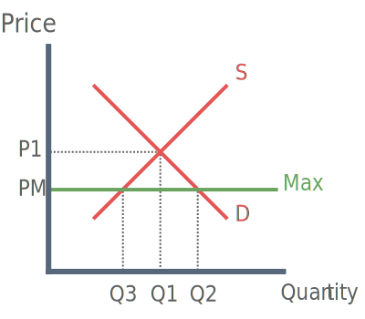

Maximum Price: A price ceiling above which the price of a good or service is not allowed to increase.
Theory
What is a Maximum Price Ceiling?
A maximum price ceiling is a form of government intervention that prevents the price of a good or service rising too high. This is because the high price of the good or service would be considered unfair.
The use of maximum price ceilings in the real world can be found in the housing market e.g. to put a max price on rent. In the U.K, rent controls were essentially abolished in the late 1980’s under the Thatcher government.
Since this time the government has been more focused on increasing the total supply of property e.g. through social housing. Maximum prices ceilings still exist in the U.S however, e.g. rent controls in Manhattan.
How does a maximum price ceiling work?

Before the use of a maximum price ceiling the market equilibrium rested at price and quanity P1 - Q1. The introduction of a maximum price ceiling caps the price at PM, the quantity that producers are willing to supply falls to Q3 whilst quantity demanded increases to Q2.
There is an excess demand illustrated by the area Q2 - Q3.
Advantages of Maximum Price Ceilings
1) Lower price for consumers / increase in consumer surplus
By caping prices at PM, consumers can benefit from a lower price and an increase in consumer surplus. However excess demand means that fewer consumers receive the benefit of lower prices because there is less supply.
2) Encourages efficiency
By lowering the price, producers receive less profit. This may encourage producers to be more efficient in other areas in order to reduce costs and restore their profit margin.
3) Prevents the producer from raising prices
A maximum price is especially useful if the market structure is a monopoly. A monopoly is characterised by the producer setting prices way above the value needed to make normal profit.
Disadvantages of Maximum Price Ceilings
1) Producers are worse off
By lowering the price, producers receive less profit and are essentially worse off. This could potentially lead to unintended consequences, for example if producers receive less profit they may be forced to cut spending on improvements leading to a deterioration of the quality of the goods.
2) Regulatory capture
Regulatory capture refers to a regulatory body acting in the interest of the groups dominant in the industry rather than in the interests of the public.
Producers may try to win over government officials to ensure the maximum price ceiling doesn’t fall too low. This is an example of government failure, as the government have failed to act in the interest of the public.
3) Black Markets
Excess demand in the market may encourage both consumers and producers alike to turn to the black market. Supplying a good on the black market, above the ruling market price, would be considered illegal and therefore undesirable.
Evaluation
A value judgement needs to be made when assessing the level of the maximum price. Will the government make the right choice?
If they set it too low producers won’t achieve a sufficient level of income and may leave the market. By making the situation worse this causes government failure.
How long will price ceiling be in place?
What other policies are in place e.g. what if lower profits for producers are accompanied by tax breaks.